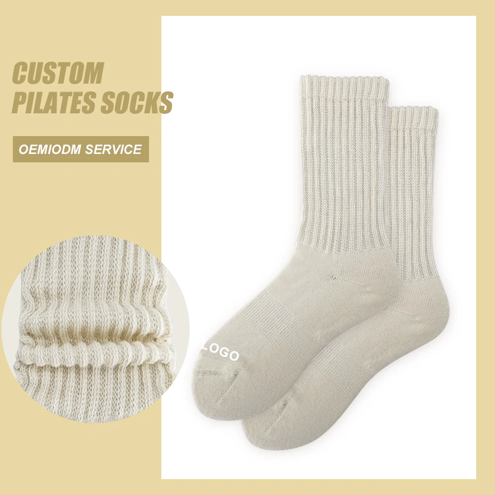

Name the buyer moment.
- First-visit or forgot-my-socks convenience
- Branded studio retail and front-desk display
- Member gift, launch event or limited drop
- Wholesale or multi-location replenishment
Studio Buyer Guide
Decision worksheet · September 3, 2026
Start with the sales use case and approval owner, then turn artwork, grip, sizing and quantities into one traceable production brief.
Review the Slouch Rib Crew direction
To design custom grip socks for a Pilates studio, define the use case, approval owner, sock construction, logo authorization, grip artwork, size plan, quantity per design × color × size, packaging, sample test and QC criteria. Bulk production should begin only after artwork, physical sample and order breakdown are approved.
A visual concept is not yet a production brief. The factory needs separate decisions for the knitted body, branding, sole artwork, size structure, packaging and commercial order block.
Photos can confirm visible shape and styling. They cannot prove the sole configuration, material performance, fit, wash life or finished-product certification unless those facts are supported by the approved specification and evidence.
1 · Commercial use
The same studio may need different briefs for first-visit convenience, regular retail, a member gift or a limited themed drop.
Mariana Tek’s 2026 report uses its North American customer data and reports that 17% of monthly Pilates visitors in that sample were new. That supports planning a first-visit use case, but it does not forecast grip-sock sales.
2 · Decision map
This table prevents a product photo, chat message or assumed MOQ from becoming the final specification by accident.
| Decision | Buyer supplies | Factory confirms | Evidence | Approval gate |
|---|---|---|---|---|
| Use case & channel | Audience, sales channel and target position | Recommended construction and packaging route | Written buyer brief | Project owner signs off |
| Franchise & trademark | Approved-vendor restriction, logo authorization and approval contact | Whether the request can proceed before sampling | Authorization record | Brand/franchise approval |
| Sock construction | Height, cuff direction, color and reference image | Yarn, knit, measurements and feasible tolerances | Specification + sample | Physical sample approved |
| Logo | Vector artwork, size and placement | Jacquard or approved alternative, legibility and MOQ | Artwork proof | Artwork approved |
| Full-sole grip | Standard/custom pattern, material and color preference | Coverage, edge spacing, bottom logo, mold need and feasibility | Sole artwork + sample | Grip sample approved |
| Size & quantity | Pairs per design × color × size | Size chart, MOQ and production breakdown | Quotation | Commercial approval |
| Packaging | Sales channel, barcode and pack-out needs | Structure, material, print, MOQ, fee and sampling time | Dieline + proof | Packaging approved |
| QC & reorder | Test method, acceptance criteria and replenishment plan | Inspection record and repeat references | Dated QC record | Bulk release |
3 · Product system
A clear brief names which elements are photographed, which are production options and which still need testing.
Sock body
Record the silhouette, cuff treatment, visible knit, yarn specification, measurements and size chart. UPILATE’s current women’s program uses S/M/L across the overall Chinese shoe-size 34–40 equivalent; do not invent an exact S/M/L conversion before the production chart is approved.
Brand identity
Supply editable artwork and name the trademark approval owner. For knitted/jacquard logo programs, planning starts from 50 pairs per logo, color and size. An embroidery program starts from 100 pairs per logo, color and size when feasible for the construction.
Sole program
Choose standard rubber or premium silicone, then approve full-sole coverage, pattern, color and edge spacing. Standard grip adds no separate grip MOQ. A custom sole mold starts from 100 pairs plus a mold fee.
Retail handoff
Free OPP bags are the standard option. Sleeves, header cards, barcodes, boxes and custom packaging need project-specific MOQ, fee and sampling confirmation. Keep the approved color, artwork and packing files with the reorder record.
4 · Quantity logic
MOQ normally applies to the exact logo, color and size block. Ask explicitly whether any combinations can be pooled; do not assume they can.
| Number of designs | ______ |
|---|---|
| Logo / artwork per design | ______ |
| Colors per design | ______ |
| Pairs per design × color × size | ______ |
| Standard or custom grip | ______ |
| Target total after MOQ check | ______ |
| Reorder trigger and lead-time buffer | ______ |
Recent apparel-sourcing discussions repeatedly ask whether MOQ is calculated per design and how sampling connects to bulk consistency. These are individual buyer anecdotes, not market statistics, but they expose useful brief fields. MOQ discussion · sampling and QC discussion
5 · Sample & QC
Marketing language is not an acceptance method. Define the sample ID, test conditions, measurement points, reviewers and pass/revise criteria.
Sample test protocol
Do not publish shrinkage, colorfastness, wash-life or performance conclusions without the actual method and result.
6 · Copyable brief
A short but structured brief produces a more useful sample plan and quotation than a reference image alone.
| Brief field | Your answer | Brief field | Your answer |
|---|---|---|---|
| Studio / market | ______ | Use case / sales channel | ______ |
| Franchise restriction | ______ | Trademark approval owner | ______ |
| Sock style / cuff | ______ | Color references | ______ |
| Logo method / placement | ______ | Artwork file link | ______ |
| Grip material / pattern | ______ | Grip color / bottom logo | ______ |
| Size plan | ______ | Quantity by combination | ______ |
| Packaging / barcode | ______ | Destination / target date | ______ |
| Sample test / QC | ______ | Reorder plan | ______ |
Why authorization is a brief field
A specific SEC-filed agreement covering Xponential/Club Pilates-branded socks illustrates that a chain program can include approved-supplier and trademark conditions. It is not a rule for every studio; it is a reason to ask the buyer who owns approval before artwork proceeds.
What has not been inferred
This guide does not claim a new search-volume trend, whole-industry grip-sock growth rate, tested slip result, wash-life number or finished-sock certification. Product and market claims stay limited to their cited source, approved specification and physical evidence.
Current OEKO-TEX documentation is yarn-supplier or yarn-level only and must not be presented as finished-sock certification. Finished-product GRS scope remains unconfirmed.
Custom Grip Sock FAQ
These FAQs help buyers plan; they do not replace the final quotation, artwork proof or physical sample.
Send the use case, sock construction reference, logo artwork, preferred colors, grip direction, women’s size plan, quantity per design × color × size, packaging needs and destination. Flag any franchise or trademark approval requirement.
Yes. Treat it as a production configuration rather than a photographed feature. Choose standard rubber or premium silicone, then approve full-sole artwork, pattern, color, edge spacing and the physical sample.
Knitted jacquard starts from 50 pairs and embroidery from 100 pairs, calculated per logo, color and size. A custom sole mold starts from 100 pairs plus a mold fee. Confirm every order combination on the quotation.
Define fit and measurements, grip coverage by zone, movement protocol, visible workmanship, care method, packaging checks and acceptance criteria. Keep the method, dated evidence and decision with the sample ID.
After the buyer approves the artwork, size chart, material and color references, grip artwork, physical sample, packaging proof, quantity breakdown, QC criteria and commercial terms.
Ready to structure the project?
Use the worksheet above, or send the information you already have. We will confirm the missing construction, grip, sampling, MOQ, packaging and schedule decisions.